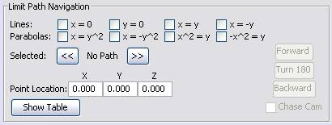
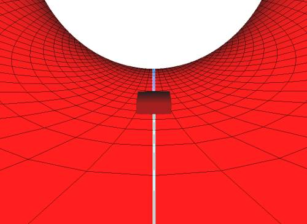

Chapter 4: Limit Path Visualization
- Chapter 1: Introduction
- Chapter 2: Traces Visualization
- Chapter 3: Tangent Plane Visualization
- Chapter 4: Limit Path Visualization
- Chapter 5: Suggested Uses of Visualizations
Getting Started
When you click the "Paths" radio button under "Visualizations", the following panel will appear at the bottom of the 3D window:
How to display paths on a surface
Notice that you are able to plot up to eight different paths on the currently displayed surface. There are four straight lines and four parabolas. Each runs through the origin. To plot a path, click the path's corresponding check box. If you want to remove the path, uncheck the same check box.
Selecting a path
You can also select a displayed path and move a point along it. To select one of the displayed paths, click either the left or right arrow buttons that are under "Selected". The selected path will be displayed between the two arrow buttons and also be highlighted blue in the 3D window.
How to move the point along the path
When a path is selected, a point with a small directional vector will appear on the path. In addition, the controls for moving the point will be enabled on the right side of the Paths panel. The controls work as follows: clicking "Forward" and "Backward" advances and reverses the point. Clicking "Turn 180" will turn the point around, so it points in the opposite direction. As the point moves along the surface, its exact coordinates are displayed under "Point Location".
Chase cam view
When a path is selected, if you click the "Chase Cam" check box, the view of the 3D window will change so you are right behind the path's point.
Viewing the point table
If you click the "Show Table" button, a table will appear that lists various z-values of the paths being displayed. This can be helpful in seeing what the value of each path is approaching as it nears the origin.